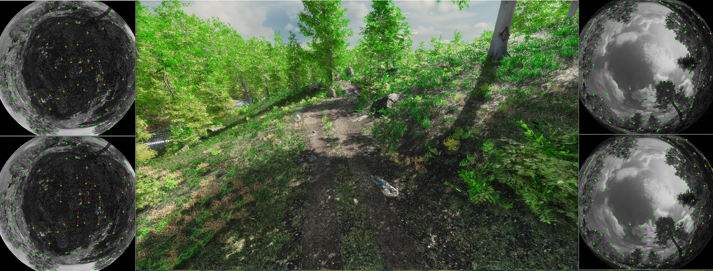
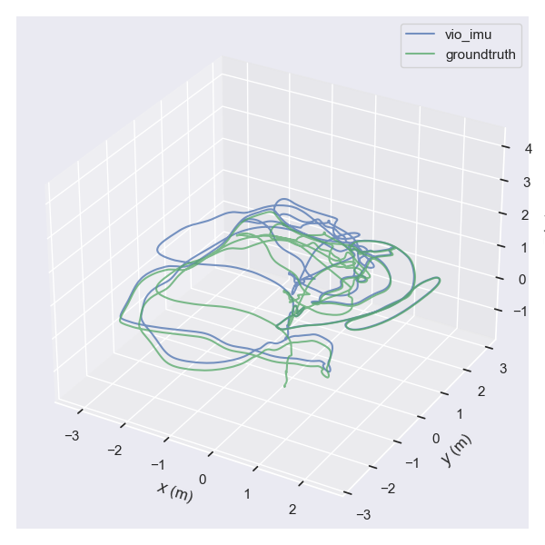
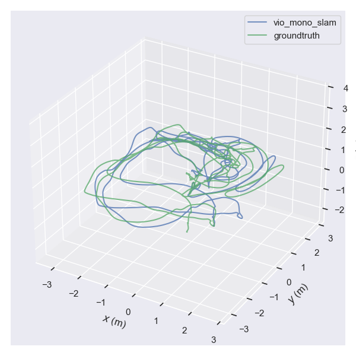

理解任务
结合主要交互对象、应尽义务与预期表现，明确这次驾驶需要完成什么。
Understanding behavior. Advancing intelligence.
让 AI 理解驾驶行为，完成专业评估，将场景中的问题转化为可行动的研发反馈。
从自动驾驶仿真出发，构建面向持续学习的智能研发系统。
01 / AI 行为评估
同样是减速，可能是合理让行，也可能是过度保守；同样是近距离通过，可能是正常交互，也可能是主动抢行。
纵向评测 Agent 结合场景任务、主要交互对象和行为时序，理解驾驶行为的合理性，输出评价结论与关键依据，为版本对比和问题分析提供基础。
488 个案例，每案运行三轮，对照人工参考检查评测结果。
1,355 / 1,464 次评价
命中人工参考
车辆让行与纵向响应已取得较高一致率；行人及非机动车让行仍有更大的提升空间。分场景验证，让能力与改进方向同时可见。
历史测试口径：评测档位命中人工给定的允许档位集合。以上结果对应已测试的纵向三类任务。
| 场景类别 | 第一轮命中 | 第二轮命中 | 第三轮命中 |
|---|---|---|---|
| 行人及非机动车让行 | 182 / 213 | 184 / 213 | 181 / 213 |
| 车辆让行 | 144 / 148 | 146 / 148 | 143 / 148 |
| 纵向响应 | 125 / 127 | 125 / 127 | 125 / 127 |
三轮累计 1,355 / 1,464 次命中。该结果为历史测试记录；新版本与新增场景需要独立验证。
规则与 AI 的分工
在现有规则体系中，部分明确情形可以直接定档。更多案例需要结合交互过程、行为义务与实际影响进行综合判断。
这里衡量现有规则的直接定档覆盖率，与上方的评测一致率属于不同指标。
结合主要交互对象、应尽义务与预期表现，明确这次驾驶需要完成什么。
连接轨迹、相对运动和关键事件时序，分析让行、抢行、响应不足或过度保守等行为。
考虑自车闭环、其他参与者主要开环回放的特点，辨别交互歧义及可能影响评价的回放伪影。
已完成 523 组纵向案例的双版本评测对比，将逐案评价组织为算法改善、退化及疑难问题的分析入口。
523 组为版本对比规模，与上方 488 个准确性测试案例分别统计。02 / 自动化研发反馈
选道研究将 AI 的作用进一步向前、向后延伸：向前理解道路与导航任务，生成参考 GT；向后连接仿真评测、版本差异和代码变更，形成完整的自动化研发反馈。
已跑通：AI GT 分析 → 仿真运行 → 自动化评测 → 版本洞察 → 代码关联 → 研发反馈。
GT 回答应该走哪里，评测判断实际走得如何，洞察分析解释值得关注的变化。
01 / AI GT 分析
结合原始道路画面、导航意图、标识与交通约束，判断哪些车道可行、哪些更加合适。存在多个合理选择时保留候选；无法可靠判断时反馈疑难。
向前：将人工选道判断的一部分工作转化为 AI 参考 GT 分析。
向中：将仿真行为转化为任务层面的专业评价。
向后：将版本变化转化为与代码相关联的研发线索。
当前已跑通自动化分析与反馈链路。GT 质量持续通过案例验收；代码关联形成待验证的原因假设。改进执行、重训练与收益验证是下一阶段工作。
我的贡献
主导 AI 评测与研发反馈方向的业务定义、技术路线和整体方案设计，将驾驶判断、仿真执行、版本分析与代码洞察连接为完整系统。
围绕真实案例组织验证与迭代，推动团队及研发 Agent 完成工程实现，逐步沉淀可复用的行为分析与评测能力。
在研发方式上，人类提供目标、资源与关键裁决，研发 Agent 围绕案例主动取证、推理和验证。以实际判断质量推动方法改进，并将成熟能力固化为可批量运行的应用 Agent。
ENGINEERING FOUNDATION
以自研 LogSim 为核心，将算法接入、云端运行、指标评测与问题定位贯通。
支持规控、预测、前融合、定位建图、AEB 与泊车。E2E 自车形成闭环，其他交通参与者主要沿原始记录开环回放。
主导整体技术路线、方案设计与落地，具体模块由团队分工实现。
INSTA360 / 飞行器与视觉算法仿真
将渲染、传感器、动力学与真实算法连接起来，支持飞行器研发迭代、视觉算法验证与训练数据生成。
基于 Unity HDRP 渲染管线搭建多目全景 SLAM 与飞控算法闭环仿真引擎，实现鱼眼相机、IMU、动力学及算法实时联动。
支持影石飞行器的研发迭代，接入 EVO，对照仿真真值评估真实算法的运行效果。



实现相机畸变及 Rolling Shutter 仿真，支持防抖算法测试；生成万张级鱼眼深度数据，支持深度估计模型研究。
THE NEXT CHAPTER
我的下一步，是把已经落地的行为理解、评测与研发反馈，连接到数据改进、算法迭代和模型训练，构建能够持续发现问题、提出改进并验证收益的学习闭环。
纵向行为评测、选道参考 GT 分析、版本洞察与代码关联，支撑实际研发。
将反馈转化为数据补充、代码修改或训练实验，以复测结果验证改进是否有效。
从自动驾驶出发，探索向机器人及其他智能系统迁移任务理解、行为评估与学习反馈的方法。